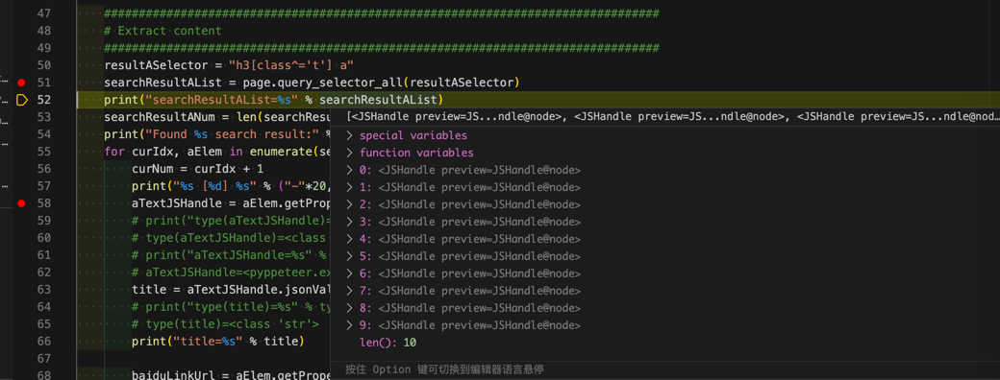
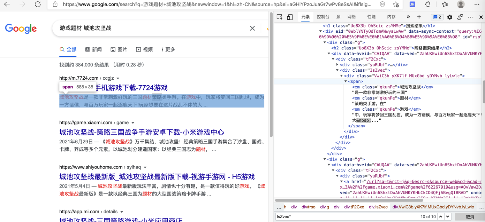
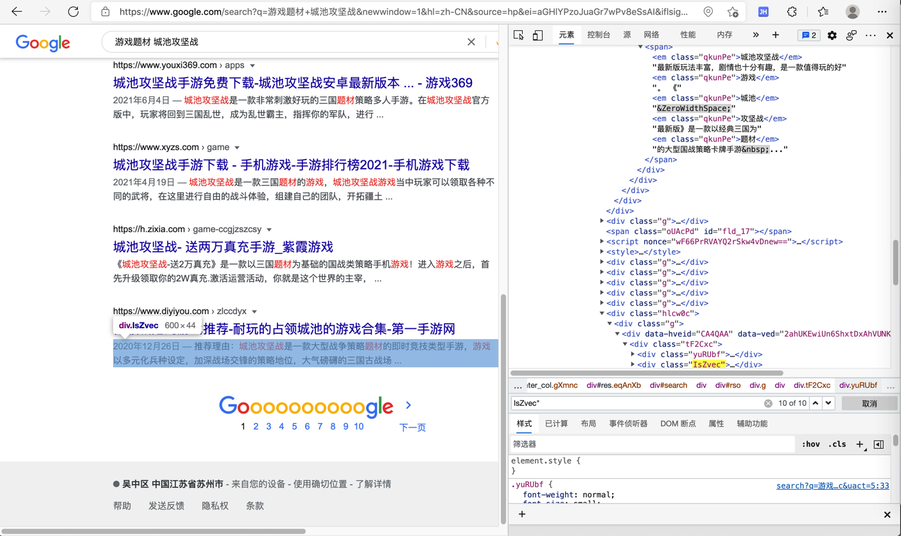

查找元素
从页面中寻找=定位=获取元素的函数是：
- element_handle
element_handle.query_selector(selector)element_handle.query_selector_all(selector)
- page
page.query_selector(selector)page.query_selector_all(selector)- https://playwright.dev/python/docs/api/class-page#pagequery_selector_allselector
- 注：返回的是
JSHandle的list
- 注：返回的是
- https://playwright.dev/python/docs/api/class-page#pagequery_selector_allselector
举例
百度搜索结果中的标题部分
resultASelector = "h3[class^='t'] a"
searchResultAList = page.query_selector_all(resultASelector)
print("searchResultAList=%s" % searchResultAList)
输出：
searchResultAList=[<JSHandle preview=JSHandle@<a target="_blank" href="http://www.baidu.com/link?…>在路上on the way - 走别人没走过的路,让别人有路可走</a>>, <JSHandle preview=JSHandle@node>, <JSHandle preview=JSHandle@node>, <JSHandle preview=JSHandle@node>, <JSHandle preview=JSHandle@node>, <JSHandle preview=JSHandle@node>, <JSHandle preview=JSHandle@node>, <JSHandle preview=JSHandle@node>, <JSHandle preview=JSHandle@node>, <JSHandle preview=JSHandle@node>]

查找定位google搜索结果
背景：
对于playwright来说，html元素选择，即支持xpath，也支持css selector。
此处对于google搜索结果的定位：
html代码：
<div class="IsZvec">
<div class="VwiC3b yXK7lf MUxGbd yDYNvb lyLwlc"><span><em class="qkunPe">城池攻坚战</em>是一款非常刺激好玩的三国<em
class="qkunPe">题材</em>策略类手游。在<em
class="qkunPe">游戏</em>中，玩家将梦回三国乱世，成为一方诸侯，与百万玩家一起逐鹿天下!玩家想要在这片战乱不休的大 ...</span></div>
</div>
。。。
<div class="IsZvec">
<div class="VwiC3b yXK7lf MUxGbd yDYNvb lyLwlc"><span class="MUxGbd wuQ4Ob WZ8Tjf">2020年12月26日 —
</span><span>推荐理由：<em class="qkunPe">城池攻坚战</em>是一款大型战争策略<em class="qkunPe">题材</em>的即时竞技类型手游，<em
class="qkunPe">游戏</em>以多元化兵种设定，加深战场交锋的策略地位，大气磅礴的三国古战场 ...</span></div>
</div>
。。。
div class=IsZvec后面的div中：
- 第一个是只有一个
span，是描述文字 - 之后每个都是2个
span，前一个=第一个，是日期；后一个=最后一个，才是描述文字
定位第一个结果
第一个结果中，div下，只有一个span，是描述内容

对应定位元素的css selector的写法：
div[class='g'] div[class='IsZvec'] div span:first-child
定位最后一个结果
页面：

想要定位到，最后一个的span，具体语法是：
div[class='g'] div[class='IsZvec'] div span:last-child
相关代码：
searchResultSelector = "div[class='g'] div[class='IsZvec'] div span:last-child”
searchResultList = page.query_selector_all(searchResultSelector)
相关完整代码：
searchResultSelector = "div[class='g'] div[class='IsZvec'] div span:last-child"
# searchResultSelector = "div[class='g'] div[class='IsZvec'] div span:first-child"
searchResultList = page.query_selector_all(searchResultSelector)
print("searchResultList=%s" % searchResultList)
searchResultNum = len(searchResultList)
print("Found %s search result:" % searchResultNum)
for curIdx, spanElem in enumerate(searchResultList):
curNum = curIdx + 1
print("%s [%d] %s" % ("-"*20, curNum, "-"*20))
print("spanElem=%s" % spanElem)
title = spanElem.text_content()
print("title=%s" % title)
# title=城池攻坚战是一款非常刺激好玩的三国题材策略类手游。在游戏中，玩家将梦回三国乱世，成为一方诸侯，与百万玩家一起逐鹿天下!玩家想要在这片战乱不休的大 ...